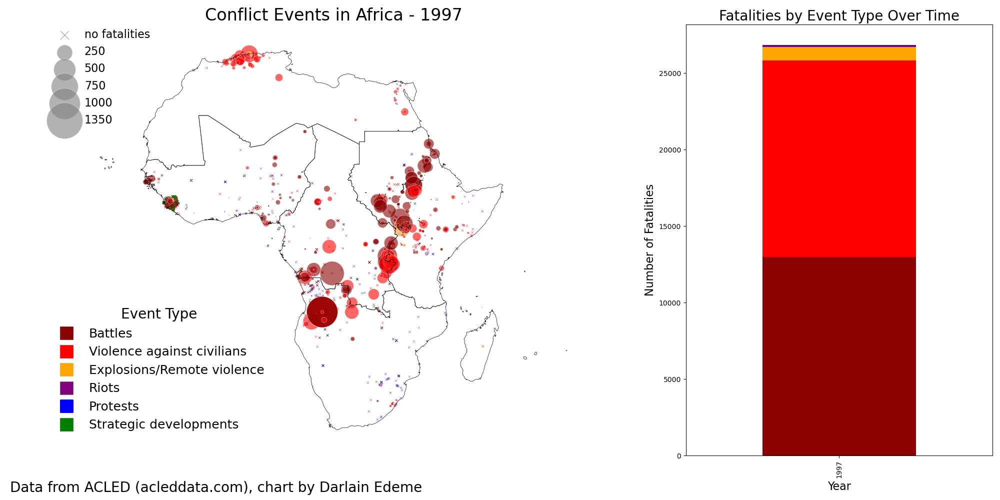

Blog
January 15, 2024

A deep dive into the potential and challenges of renewable energy sources in Africa. This article explores the opportunities for solar, wind, and hydroelectric power to transform the continent's energy landscape.
February 10, 2024
An examination of the role of natural gas as a transitional fuel in Africa's energy mix. We discuss its benefits, challenges, and the environmental implications of its use.
March 5, 2024
This article highlights the latest advancements in smart grid technology and their potential impact on the efficiency and reliability of energy systems in Africa.
March 20, 2024
Explore how geospatial data can be utilized to enhance energy planning and policy-making, with a focus on sustainable development in Africa.
April 10, 2024
Understanding the financial mechanisms and investment opportunities that can drive the growth of renewable energy projects across Africa.
April 25, 2024
An in-depth analysis of how improving energy access can contribute to poverty alleviation and socio-economic development in Africa.
May 15, 2024
Case studies of innovative solar energy projects that are making a difference in rural communities across Africa.
June 5, 2024
Examining the policy frameworks that are essential for fostering sustainable energy development in African countries.
June 20, 2024
An analysis of how climate change is affecting energy systems in Africa and the strategies being implemented to mitigate its impact.
July 5, 2024
Exploring the latest energy storage solutions and their potential to enhance energy security and reliability in Africa.